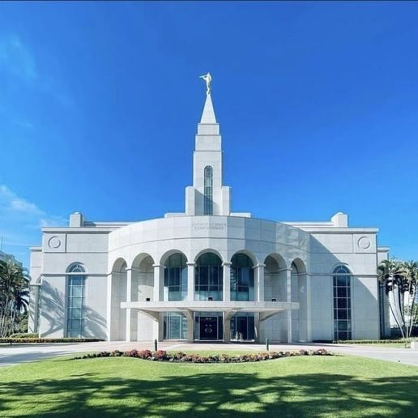
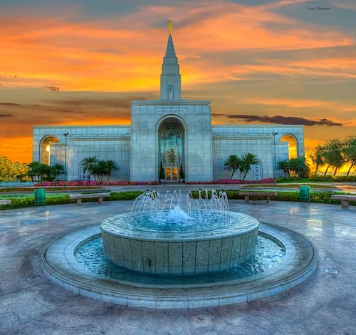

Templos ao Redor do Mundo
Templo de São Paulo, Brasil
Templo de Salt Lake City, Utah
Templo de Manaus, Brasil
Templo de Curitiba, Brasil
Templo de Fortaleza, Brasil

Templo de Recife, Brasil
Templo de Brasília, Brasil

Templo de Campinas, Brasil
Templo de Belém, Brasil